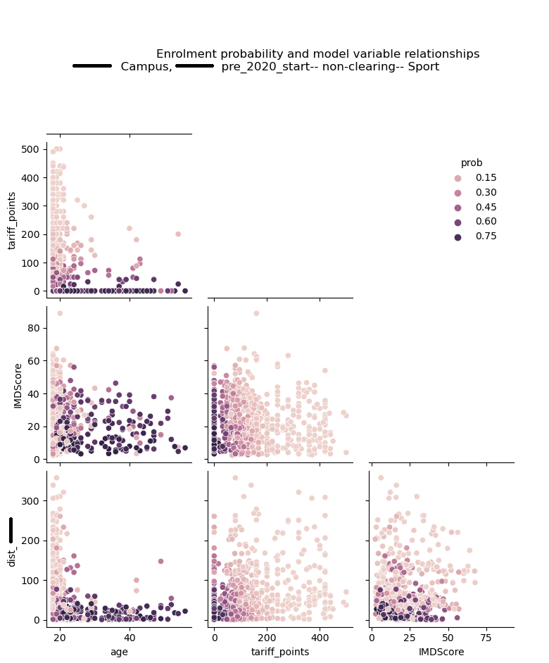

Project 1 -
University applicant segmentation
Project Overview
Various UK universities have commisioned this segmentation project. Using data from previous applicants who ultimately enroled or didn't enrol, the characteristics of groups with various likelihoods of enrolment are described. Universities use this insight to target their recruitment efforts.
Data preprocessing
The data provided typically includes a unique applicant ID, academic background,
demographic variables, home location, application date, and enrolment status
(enrolled or didn't enroll). These data are first cleaned which usually involves
deduplicating rows, handling null values, checking variable distributions and proportions,
using NLP techniques to clean and validate applicant postcodes.
The data are then enriched by
geolocating the home address, calculating the distance to campus (Haversine distance),
and merging the Index of Multiple Deprivation (IMD) with the applicant data on location.
This is done using the Geopandas library with a spatial join on applicant postcode (point)
and LSOA area (polygon).
Heatmap showing applicant location and corresponding IMD score for their postcode. Higher scores indicate higher levels of deprivation.
Modelling
The data are by nature unbalanced because a typical university enrols approximately 20%
of applicants. To correct this and improve the accuracy of the model, SMOTE was used
to produce dummy data for the training sample following an 80-20 train lest split.
t tests and chi-square tests were used to
inform feature selection. The features for which enrolment status had a significant
effect were entered into the initial model. Logistic regression was the performed on
the training sample of data using the selected features. The Statsmodels library was used.
Distance to campus followed by
age were typically the best predictors of enrolment status. IMD score and a subset
of the IMD, education score were often significant predictors in addition.
A final model was selected based on the F1 score in the regression while
looking for a balance between precision and recall, and by observing the confusion matrix.
Multicolinearity was avoided by selecting variables with minimal or no correlation.
The model was then applied to the original dataset (without SMOTE) in order to calculate
the predicted probability that each applicant would enrol. For the purpose of this
project it was important to observe a non-binary distribution of predicted probabilities.
This allows for applicants to be grouped by enrolment likelihood, for sufficient quantity
in each group, and for these groups to be demarcated. A total of four segmentation groups
was considered a practical number to allow universities to make business decisions.
Volume of applicants in each segmented group and their corresponding propensity for enrolment.
Correlation matrix demonstrating the relationships between selected features for one example model. Colours indicate probability of enrolment.
Conclusion
This analysis was performed separately for clearing applicants and for each faculty, campus and level of study the university required, subject to sample size. For some clients, the impact of covid was also assessed. Descriptive statistics of each segmented group were presented to the university along with expert domain business advice from my colleauges. This included competitor market share for these applicants, advice on entry requirements, and advice on how to use these findings to target marketing efforts based on location and messaging.